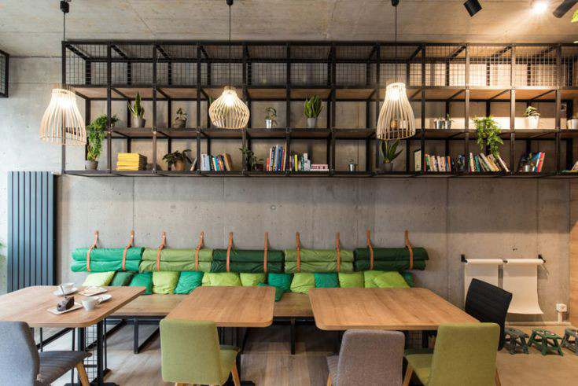
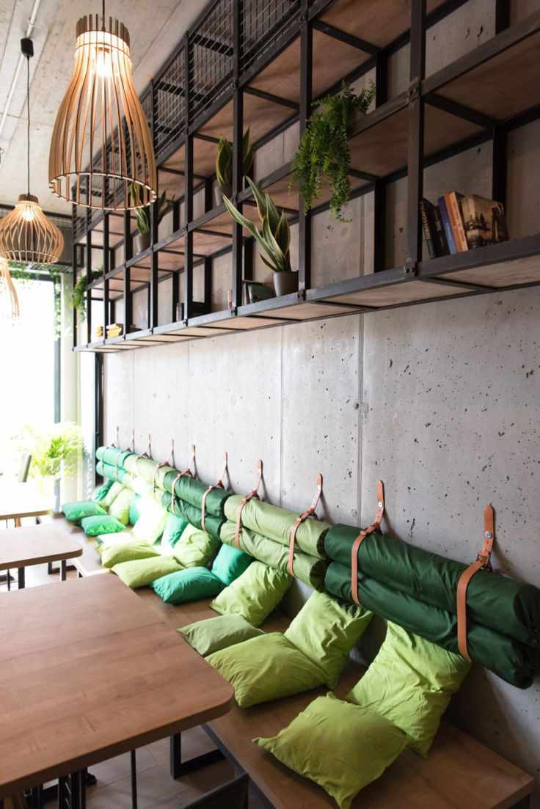
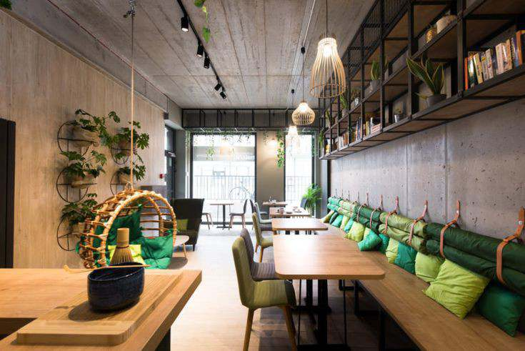

𝙴𝚡𝚙𝚎𝚛𝚒𝚎𝚗𝚌𝚎 𝚝𝚑𝚎 𝚏𝚒𝚗𝚎𝚜𝚝 𝚖𝚊𝚝𝚌𝚑𝚊 𝚏𝚕𝚊𝚟𝚘𝚛𝚜 𝚒𝚗 𝚝𝚘𝚠𝚗.
- 𝐇𝐨𝐦𝐞
- 𝐀𝐛𝐨𝐮𝐭 𝐮𝐬
- 𝐌𝐞𝐧𝐮
- 𝐖𝐨𝐫𝐤𝐬𝐡𝐨𝐩
- 𝐂𝐨𝐧𝐭𝐚𝐜𝐭 𝐮𝐬
- 𝐆𝐚𝐥𝐥𝐞𝐫𝐲
- 𝐎𝐫𝐝𝐞𝐫
- 𝐏𝐫𝐨𝐦𝐨𝐬
- 𝐀𝐧𝐧𝐨𝐮𝐧𝐜𝐞𝐦𝐞𝐧𝐭
- 𝐁𝐫𝐚𝐧𝐜𝐡𝐞𝐬
- 𝐅𝐀𝐐𝐬
- 𝐅𝐞𝐞𝐝𝐛𝐚𝐜𝐤𝐬
- 𝐏𝐫𝐢𝐯𝐚𝐜𝐲 𝐏𝐨𝐥𝐢𝐜𝐲
-
𝐀𝐛𝐨𝐮𝐭 𝐮𝐬
𝐊𝐞𝐢𝐳𝐨𝐮'𝐬 𝐌𝐚𝐭𝐜𝐡𝐚'𝐬 𝐟𝐢𝐫𝐬𝐭 𝐛𝐫𝐚𝐧𝐜𝐡 𝐨𝐩𝐞𝐧𝐞𝐝 𝐢𝐧 𝐉𝐚𝐧𝐮𝐚𝐫𝐲 𝟐𝟎𝟐𝟒 𝐚𝐭 𝐭𝐡𝐞 𝐔𝐏 𝐓𝐨𝐰𝐧 𝐂𝐞𝐧𝐭𝐞𝐫 𝐢𝐧 𝐐𝐮𝐞𝐳𝐨𝐧 𝐂𝐢𝐭𝐲. 𝐊𝐞𝐢𝐳𝐨𝐮'𝐬 𝐌𝐚𝐭𝐜𝐡𝐚 𝐬𝐞𝐫𝐯𝐞𝐬 𝐡𝐢𝐠𝐡-𝐪𝐮𝐚𝐥𝐢𝐭𝐲 𝐦𝐚𝐭𝐜𝐡𝐚-𝐛𝐚𝐬𝐞𝐝 𝐝𝐫𝐢𝐧𝐤𝐬 𝐚𝐧𝐝 𝐝𝐞𝐥𝐞𝐜𝐭𝐚𝐛𝐥𝐞 𝐟𝐨𝐨𝐝, 𝐰𝐢𝐭𝐡 𝐭𝐡𝐞 𝐠𝐨𝐚𝐥 𝐨𝐟 𝐩𝐫𝐨𝐯𝐢𝐝𝐢𝐧𝐠 𝐞𝐱𝐜𝐞𝐥𝐥𝐞𝐧𝐭 𝐜𝐨𝐟𝐟𝐞𝐞 𝐚𝐧𝐝 𝐠𝐫𝐚𝐜𝐢𝐨𝐮𝐬 𝐬𝐞𝐫𝐯𝐢𝐜𝐞 𝐰𝐡𝐢𝐥𝐞 𝐜𝐫𝐞𝐚𝐭𝐢𝐧𝐠 𝐚 𝐦𝐞𝐦𝐨𝐫𝐚𝐛𝐥𝐞 𝐞𝐱𝐩𝐞𝐫𝐢𝐞𝐧𝐜𝐞 𝐟𝐨𝐫 𝐜𝐮𝐬𝐭𝐨𝐦𝐞𝐫𝐬.
𝐀𝐭 𝐊𝐞𝐢𝐳𝐨𝐮'𝐬 𝐌𝐚𝐭𝐜𝐡𝐚, 𝐭𝐡𝐞 𝐚𝐫𝐭 𝐨𝐟 𝐜𝐫𝐚𝐟𝐭𝐢𝐧𝐠 𝐭𝐡𝐞 𝐛𝐞𝐬𝐭 𝐭𝐚𝐬𝐭𝐢𝐧𝐠 𝐦𝐚𝐭𝐜𝐡𝐚 𝐫𝐞𝐪𝐮𝐢𝐫𝐞𝐬 𝐫𝐞𝐬𝐩𝐞𝐜𝐭𝐢𝐧𝐠 𝐞𝐚𝐜𝐡 𝐢𝐧𝐝𝐢𝐯𝐢𝐝𝐮𝐚𝐥 𝐛𝐥𝐞𝐧𝐝. 𝐊𝐧𝐨𝐰𝐢𝐧𝐠 𝐭𝐡𝐞 𝐬𝐩𝐞𝐜𝐢𝐟𝐢𝐜 𝐨𝐫𝐢𝐠𝐢𝐧 𝐚𝐧𝐝 𝐩𝐫𝐨𝐜𝐞𝐬𝐬𝐢𝐧𝐠 𝐦𝐞𝐭𝐡𝐨𝐝 𝐟𝐨𝐫 𝐞𝐚𝐜𝐡 𝐦𝐚𝐭𝐜𝐡𝐚 𝐚𝐥𝐥𝐨𝐰𝐬 𝐟𝐨𝐫 𝐚𝐧 𝐢𝐧𝐭𝐞𝐧𝐬𝐞 𝐟𝐥𝐚𝐯𝐨𝐫 𝐩𝐫𝐨𝐟𝐢𝐥𝐞 𝐭𝐡𝐚𝐭 𝐜𝐚𝐧 𝐛𝐞 𝐭𝐫𝐚𝐜𝐞𝐝 𝐛𝐚𝐜𝐤 𝐭𝐨 𝐢𝐭𝐬 𝐞𝐚𝐫𝐥𝐢𝐞𝐬𝐭 𝐛𝐞𝐠𝐢𝐧𝐧𝐢𝐧𝐠𝐬. 𝐁𝐲 𝐜𝐚𝐫𝐞𝐟𝐮𝐥𝐥𝐲 𝐬𝐞𝐥𝐞𝐜𝐭𝐢𝐧𝐠 𝐦𝐚𝐭𝐜𝐡𝐚 𝐟𝐫𝐨𝐦 𝐝𝐢𝐟𝐟𝐞𝐫𝐞𝐧𝐭 𝐫𝐞𝐠𝐢𝐨𝐧𝐬 𝐚𝐧𝐝 𝐚𝐩𝐩𝐥𝐲𝐢𝐧𝐠 𝐯𝐚𝐫𝐢𝐨𝐮𝐬 𝐩𝐫𝐨𝐜𝐞𝐬𝐬𝐢𝐧𝐠 𝐭𝐞𝐜𝐡𝐧𝐢𝐪𝐮𝐞𝐬, 𝐰𝐞 𝐬𝐤𝐢𝐥𝐥𝐟𝐮𝐥𝐥𝐲 𝐜𝐫𝐞𝐚𝐭𝐞 𝐭𝐡𝐞 𝐟𝐥𝐚𝐯𝐨𝐫 𝐜𝐚𝐭𝐞𝐠𝐨𝐫𝐢𝐞𝐬 𝐲𝐨𝐮 𝐤𝐧𝐨𝐰 𝐚𝐧𝐝 𝐞𝐧𝐣𝐨𝐲 𝐞𝐯𝐞𝐫𝐲 𝐝𝐚𝐲. 𝐅𝐫𝐨𝐦 𝐃𝐞𝐥𝐢𝐜𝐚𝐭𝐞 𝐚𝐧𝐝 𝐑𝐞𝐟𝐫𝐞𝐬𝐡𝐢𝐧𝐠 𝐭𝐨 𝐑𝐢𝐜𝐡 𝐚𝐧𝐝 𝐑𝐨𝐛𝐮𝐬𝐭, 𝐰𝐞 𝐞𝐧𝐬𝐮𝐫𝐞 𝐭𝐡𝐚𝐭 𝐞𝐯𝐞𝐫𝐲 𝐬𝐢𝐩 𝐨𝐟 𝐨𝐮𝐫 𝐦𝐚𝐭𝐜𝐡𝐚 𝐢𝐬 𝐚 𝐩𝐞𝐫𝐟𝐞𝐜𝐭 𝐛𝐚𝐥𝐚𝐧𝐜𝐞 𝐨𝐟 𝐭𝐚𝐬𝐭𝐞 𝐚𝐧𝐝 𝐪𝐮𝐚𝐥𝐢𝐭𝐲, 𝐟𝐫𝐨𝐦 𝐭𝐡𝐞 𝐦𝐨𝐦𝐞𝐧𝐭 𝐭𝐡𝐞 𝐥𝐞𝐚𝐯𝐞𝐬 𝐚𝐫𝐞 𝐡𝐚𝐫𝐯𝐞𝐬𝐭𝐞𝐝 𝐭𝐨 𝐭𝐡𝐞 𝐟𝐢𝐧𝐚𝐥 𝐜𝐮𝐩..

𝐈𝐧 𝐚𝐝𝐝𝐢𝐭𝐢𝐨𝐧 𝐭𝐨 𝐊𝐞𝐢𝐳𝐨𝐮'𝐬 𝐌𝐚𝐭𝐜𝐡𝐚'𝐬 𝐞𝐱𝐜𝐞𝐥𝐥𝐞𝐧𝐭 𝐬𝐞𝐫𝐯𝐢𝐜𝐞 𝐚𝐧𝐝 𝐝𝐞𝐥𝐢𝐜𝐢𝐨𝐮𝐬 𝐜𝐮𝐢𝐬𝐢𝐧𝐞 𝐚𝐧𝐝 𝐝𝐫𝐢𝐧𝐤𝐬, 𝐭𝐡𝐞 𝐢𝐧𝐭𝐞𝐫𝐢𝐨𝐫 𝐨𝐟 𝐞𝐚𝐜𝐡 𝐥𝐨𝐜𝐚𝐭𝐢𝐨𝐧 𝐢𝐬 𝐬𝐩𝐞𝐜𝐭𝐚𝐜𝐮𝐥𝐚𝐫, 𝐠𝐢𝐯𝐢𝐧𝐠 𝐭𝐡𝐞𝐦 𝐚𝐧 𝐚𝐝𝐯𝐚𝐧𝐭𝐚𝐠𝐞 𝐨𝐯𝐞𝐫 𝐭𝐡𝐞 𝐜𝐨𝐦𝐩𝐞𝐭𝐢𝐭𝐢𝐨𝐧. 𝐓𝐡𝐞 𝐥𝐨𝐜𝐚𝐭𝐢𝐨𝐧 𝐚𝐥𝐨𝐧𝐞 𝐢𝐬 𝐦𝐨𝐭𝐢𝐯𝐚𝐭𝐢𝐨𝐧 𝐞𝐧𝐨𝐮𝐠𝐡 𝐭𝐨 𝐬𝐭𝐨𝐩 𝐛𝐲. 𝐊𝐞𝐢𝐳𝐨𝐮'𝐬 𝐌𝐚𝐭𝐜𝐡𝐚 𝐨𝐮𝐭𝐥𝐞𝐭𝐬 𝐚𝐫𝐞 𝐝𝐞𝐜𝐨𝐫𝐚𝐭𝐞𝐝 𝐰𝐢𝐭𝐡 𝐟𝐥𝐨𝐰𝐞𝐫𝐬 𝐚𝐧𝐝 𝐠𝐫𝐞𝐞𝐧𝐬 𝐭𝐨 𝐜𝐫𝐞𝐚𝐭𝐞 𝐚 𝐣𝐨𝐲𝐟𝐮𝐥 𝐚𝐧𝐝 𝐛𝐫𝐢𝐠𝐡𝐭 𝐚𝐭𝐦𝐨𝐬𝐩𝐡𝐞𝐫𝐞 𝐟𝐨𝐫 𝐜𝐨𝐧𝐬𝐮𝐦𝐞𝐫𝐬. 𝐓𝐡𝐞𝐲 𝐮𝐬𝐞𝐝 𝐦𝐨𝐨𝐝 𝐥𝐢𝐠𝐡𝐭𝐢𝐧𝐠 𝐚𝐧𝐝 𝐜𝐨𝐦𝐟𝐨𝐫𝐭𝐚𝐛𝐥𝐞 𝐬𝐞𝐚𝐭𝐢𝐧𝐠 𝐭𝐨 𝐠𝐢𝐯𝐞 𝐞𝐚𝐜𝐡 𝐜𝐮𝐬𝐭𝐨𝐦𝐞𝐫 𝐚 𝐬𝐞𝐧𝐬𝐞 𝐨𝐟 𝐩𝐞𝐫𝐬𝐨𝐧𝐚𝐥 𝐬𝐩𝐚𝐜𝐞. 𝐓𝐡𝐞𝐫𝐞 𝐚𝐫𝐞 𝐬𝐞𝐜𝐭𝐢𝐨𝐧𝐬 𝐟𝐨𝐫 𝐢𝐧𝐝𝐢𝐯𝐢𝐝𝐮𝐚𝐥𝐬 𝐰𝐡𝐨 𝐚𝐫𝐞 𝐣𝐮𝐬𝐭 𝐩𝐚𝐬𝐬𝐢𝐧𝐠 𝐭𝐡𝐞 𝐭𝐢𝐦𝐞, 𝐥𝐨𝐧𝐠 𝐭𝐚𝐛𝐥𝐞𝐬 𝐟𝐨𝐫 𝐭𝐡𝐨𝐬𝐞 𝐰𝐡𝐨 𝐦𝐚𝐲 𝐛𝐞 𝐡𝐨𝐥𝐝𝐢𝐧𝐠 𝐚 𝐦𝐞𝐞𝐭𝐢𝐧𝐠, 𝐚𝐧𝐝 𝐜𝐨𝐦𝐟𝐨𝐫𝐭𝐚𝐛𝐥𝐞 𝐬𝐨𝐟𝐚𝐬 𝐟𝐨𝐫 𝐠𝐫𝐨𝐮𝐩𝐬 𝐰𝐡𝐨 𝐚𝐫𝐞 𝐬𝐢𝐦𝐩𝐥𝐲 𝐡𝐚𝐧𝐠𝐢𝐧𝐠 𝐨𝐮𝐭. 𝐊𝐞𝐢𝐳𝐨𝐮'𝐬 𝐌𝐚𝐭𝐜𝐡𝐚 𝐢𝐬 𝐫𝐞𝐠𝐚𝐫𝐝𝐞𝐝 𝐚𝐬 𝐭𝐡𝐞 𝐦𝐨𝐬𝐭 𝐈𝐧𝐬𝐭𝐚𝐠𝐫𝐚𝐦𝐦𝐚𝐛𝐥𝐞 𝐦𝐚𝐭𝐜𝐡𝐚 𝐞𝐬𝐭𝐚𝐛𝐥𝐢𝐬𝐡𝐦𝐞𝐧𝐭 𝐛𝐲 𝐢𝐭𝐬 𝐥𝐨𝐲𝐚𝐥 𝐜𝐮𝐬𝐭𝐨𝐦𝐞𝐫𝐬 𝐛𝐞𝐜𝐚𝐮𝐬𝐞 𝐨𝐟 𝐢𝐭𝐬 𝐮𝐧𝐢𝐪𝐮𝐞 𝐜𝐨𝐧𝐜𝐞𝐩𝐭.
